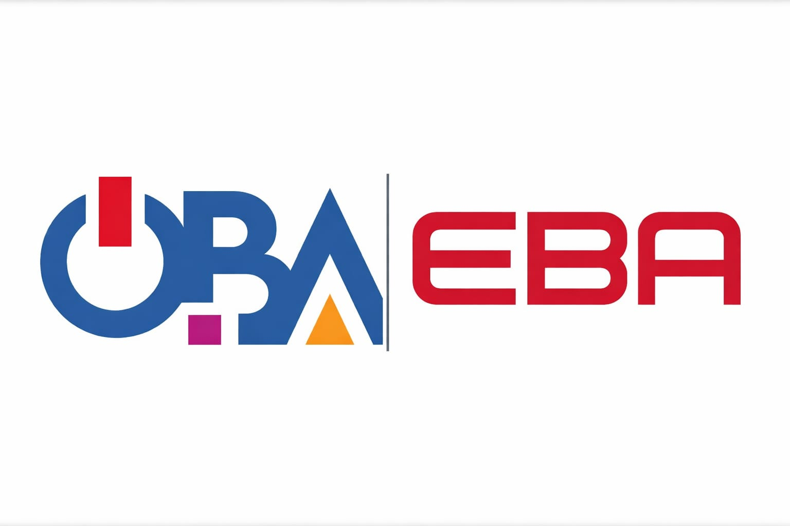

EBA ve ÖBA: Dijital Öğrenme ve Mesleki Gelişim Ekosistemi
Millî Eğitim Bakanlığı'nın dijital eğitim vizyonu içinde EBA ve ÖBA,
birbirini tamamlayan iki temel platform olarak öne çıkmaktadır. EBA, öğrenciler, öğretmenler ve veliler için
içerik, ders, etkinlik ve dijital öğrenme kaynakları sunarken; ÖBA daha çok öğretmenlerin mesleki gelişim,
hizmet içi eğitim ve uzmanlaşma süreçlerine odaklanan bir yapı sunmaktadır.
Bu iki platform birlikte değerlendirildiğinde, okul ekosisteminde hem öğrenci öğrenmesini hem de öğretmen
gelişimini destekleyen bütüncül bir dijital ortam ortaya çıkmaktadır.

EBA öğrenme içeriklerini, ÖBA ise öğretmen gelişim süreçlerini destekleyen tamamlayıcı yapılardır.
Platformların Temel Yapısı
EBA – Eğitim Bilişim Ağı
EBA, YEĞİTEK tarafından geliştirilen ve yönetilen dijital eğitim platformudur. Portal; öğrenci, öğretmen
ve veli erişimine açık yapısıyla ders içerikleri, videolar, etkileşimli uygulamalar, kitaplar, ölçme araçları
ve farklı eğitim kaynaklarını tek çatı altında toplar.
Hedef kitle: Öğrenci, öğretmen, veli
İçerik türleri: Ders anlatımları, etkinlikler, testler, videolar, dijital materyaller
Kurumsal yapı: YEĞİTEK / MEB dijital eğitim ekosistemi
ÖBA, öğretmenlerin çevrim içi eğitimlere katılması, hizmet içi eğitim başvurularını takip etmesi ve
mesleki gelişim içeriklerine ulaşması için kullanılan dijital platformdur. Adaylık eğitimleri, mesleki
gelişim içerikleri ve dijital yetkinlik eğitim paketleri gibi başlıklar öne çıkmaktadır.
Hedef kitle: Öğretmenler ve eğitim personeli
İçerik türleri: Hizmet içi eğitim, adaylık eğitimi, mesleki gelişim modülleri
Öne çıkan yapı: Dijital Yetkinlik Eğitim Paketi, yüz yüze eğitim başvuruları
Özetle: EBA daha çok öğrenenin ders içeriğine erişimini kolaylaştırırken,
ÖBA öğretmenin sürekli gelişim ve eğitim yönetimi ihtiyaçlarına cevap verir. Bu nedenle iki platform,
okulun dijital kültürünü farklı açılardan güçlendiren tamamlayıcı araçlar olarak görülmelidir.
Okul Ortamında Kullanım Alanları
Sınıf içi öğrenme
EBA üzerinden ders anlatımları, etkinlikler, videolar ve ölçme araçları kullanılarak sınıf içi öğretim desteklenebilir.
Ödev ve tekrar
Öğrenciler ders dışı zamanlarda EBA içeriklerine erişerek tekrar yapabilir, öğretmenler de yönlendirilmiş içerikler paylaşabilir.
Öğretmen mesleki gelişimi
ÖBA üzerinden seminerler, hizmet içi eğitimler ve dijital yetkinlik modülleri takip edilerek mesleki gelişim planlanabilir.
Kurum içi gelişim kültürü
EBA ve ÖBA birlikte kullanıldığında okulda hem öğrenme hem de öğretmen gelişimi için ortak bir dijital kültür oluşur.
ÖBA'da Öne Çıkan Başlıklar
Kamuya açık içeriklerden görüldüğü üzere ÖBA; adaylık eğitimleri, hizmet içi eğitimler,
mesleki gelişim toplulukları ve Dijital Yetkinlik Eğitim Paketi gibi başlıklar altında
öğretmenlere yapılandırılmış öğrenme fırsatları sunmaktadır. Ayrıca yüz yüze eğitim başvurularının da platform üzerinden
takip edilebilmesi, ÖBA'yı yalnızca bir içerik arşivi değil aynı zamanda bir mesleki gelişim yönetim alanı hâline getirmektedir.
EBA tarafında ise farklı ders seviyelerine ve kullanıcı türlerine yönelik çok geniş bir içerik havuzu bulunması, platformu
günlük eğitim pratiğinin vazgeçilmez dijital desteklerinden biri yapmaktadır.